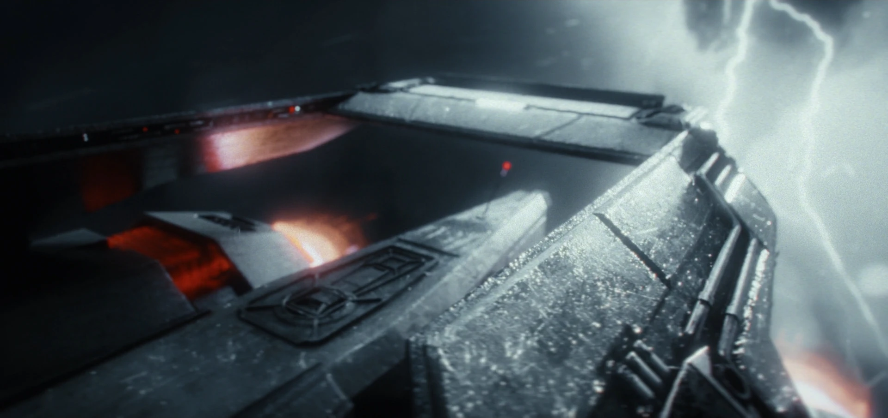
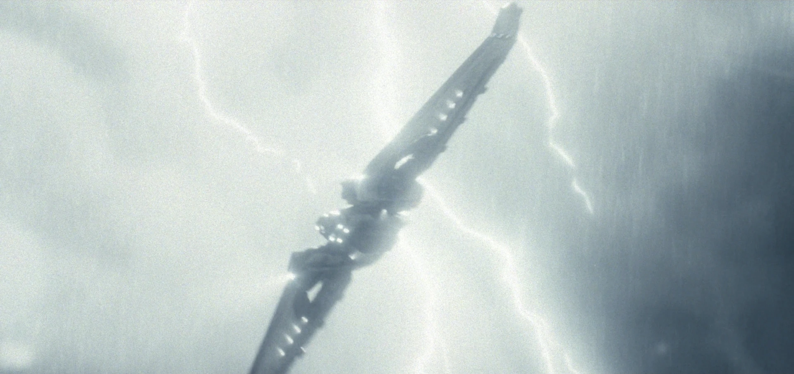
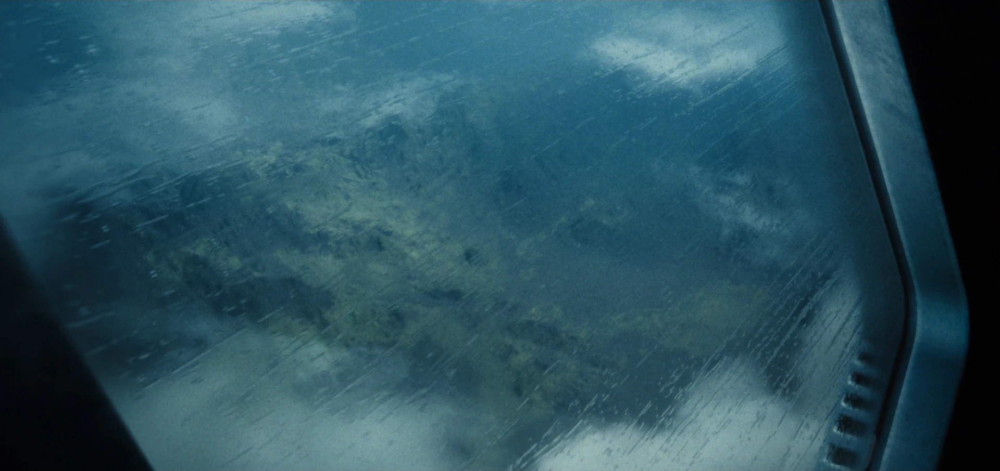

3D Generalist / R&D
2 months
2024
Houdini
Nuke
I was approached by Clemens Willberger to assist during the Research & Development phase of the project. My work focused on creating and refining key visual effects, including lightning strikes, water droplets, and volumetric effects, which helped define the project’s atmosphere.
I was assigned to various parts of the R&D Process. So my part of the project was not to create the final image, but find ways to create efficient workflows and assets that could speed up the production process. This included a way to render waterdroplets, lightning strikes, volumetric dome lighting for the spaceship lights aswell as HDRI's and cloud assets.
One of the first tasks that I was assigned was to find ways to create sliding waterdroplets on the surfaces of the spaceship. I started with a fully rendered approach but after I noticed that I could also fake it in Nuke and thus have a lot more control over all aspects of the image, I stayed with that approach. Even though, if you want the most realistic result out of the box and not the most efficient, then prolly rendering it, might be the better fit.
As you might have seen already, the shots of this short ad are full of lightning strikes and volumetrics. So my mission was to find a simple and effective way to render those. In the end I delivered over 40 variations of lightning strikes to the rendering & compositing team. It all started with a point cloud and then one step after another added features like branching, and twitching.
When you got these amounts of shots, it's always useful to have a background for any angle imaginable. Thats why I created a set of Clouds & HDRIs that could be placed anywhere. For the more organic looking clouds in the foreground we used some of the clouds in the VRAY Library accessible online.
If you had'nt enough breakdowns already, you can check out the complete breakdown below, which includes a the ton of work that was put into rendering, compositing, lighting, modeling and so on.
Nuke
○ Nuke 3D System e.g. 3D Cards & HDRIs
○ Various Distortion Methods
Houdini
○ 360° Rendering in KarmaXPU
○ Volumetric rendering
○ Various ways to render water effects on geometry